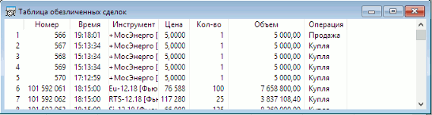

менюСоздать окно / Таблица обезличенных сделок... или кнопка
Получение обезличенной (без указания сторон) информации по всем заключенным
сделкам. Таблица является источником данных для экспорта в системы технического анализа.  Растущая вниз таблица, строки которой идентифицируют последовательность совершенных
сделок В столбцах таблицы отображаются следующие парметры:
Назначение
Формат таблицы
Параметр
Значение
*Номер
Регистрационный номер сделки в торговой системе
Дата торгов
Дата текущей торговой сессии
** Дата
Дата совершения сделки
*, ** Время
Время совершения сделки по часам торговой системы биржи с точностью до секунды. Формат определяется настройками операционной системы
Время (мкс)
Количество микросекунд во времени совершения сделки
Период
Период торговой сессии. Возможные значения:
Класс
Наименование класса инструментов
Код инструмента
Биржевой идентификатор, присвоенный инструменту
Инструмент сокр.
Сокращенное наименование инструмента
*Инструмент
Наименование инструмента
*Цена
Цена совершенной сделки, рублей
*Количество
Количество лотов в сделке с точностью
количества инструмента или в штуках
*Объем
Объем сделки в денежном выражении с
точностью валюты цены инструмента, рублей
*Операция
Направление операции. Возможные значения:
Код расчетов
Код расчетов по сделке для Режима переговорных сделок
(РПС) и операций РЕПО
Доходность
Доходность инструмента, рассчитанная по цене совершенной
сделки, %. Параметр относится к сделкам по облигациям
НКД
Накопленный купонный доход с
точностью валюты цены инструмента, рублей. Параметр относится к
сделкам по облигациям
Ставка РЕПО(%)
Ставка РЕПО, в процентах. Параметр операций РЕПО
Сумма РЕПО
Сумма РЕПО - сумма
привлеченных/предоставленных по сделке РЕПО денежных средств, по состоянию
на текущую дату с точностью валюты цены инструмента, рублей. Параметр
сделок РЕПО ГЦБ
Объем выкупа РЕПО
Объем сделки выкупа РЕПО с точностью валюты цены инструмента, рублей. Параметр сделок РЕПО
ГЦБ
Срок РЕПО
Срок РЕПО в календарных днях. Параметр сделок
РЕПО
Открытый интерес
Количество открытых позиций с
точностью количества инструмента
Код биржи
Идентификатор биржи
Площадка исполнения
Идентификатор биржевой площадки, на которой зарегистрирована сделка
* - параметры, выбранные по умолчанию
** - при включенной настройке «Показывать дату и время торговых данных с учетом локальной временной зоны» значение отображается с учетом временной зоны компьютера, на котором запущен терминал QUIK
К таблице может быть применен Режим связанных окон.
Данные из таблицы доступны для копирования, вывода через DDE-сервер, экспорта по ODBC и сохранения в текстовый файл.
Функции, доступные для данной таблицы, могут быть вызваны из пункта меню Действия или контекстного меню таблицы:
Дополнительно:
См. также Формат сохранения в текстовый файл